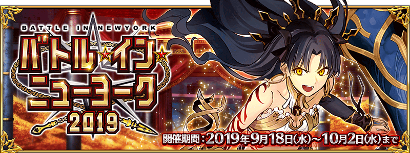

舉辦期間限定活動「Battle in New York 2019」！
今年也賭上此行星“最強”之座讓祭典之堰高漲！
戰勝並座的猛者，贏得最強的稱號與豪華報酬吧。
活動期間中會出現2種的活動關卡！
在挑戰與從者的戰鬥的大會關卡中，能獲得活動道具。
收集活動道具的話，除了可交換各種報酬外，也可挑戰抽選來贏得各式各樣的競賽贈品！
另外，通過挑戰無法續關的超高難易度戰鬥的展演關卡的話，可更加獲得豪華報酬！
※本頁面皆為開發中圖片。會有與實際圖片相異的情況。 ※一部份的關卡為日後開放。
◆活動舉辦期間◆
2019年9月18日(三) 17:0018:00～10月2日(三) 11:59
◆活動參加條件◆
滿足以下條件的御主才能參加
・通過「特異點F 炎上汙染都市 冬木」

期間限定活動「Battle in New York 2019」中會出現以一定期間變化關卡內容的大會關卡與逐日開放各開放1關的展演關卡2種活動關卡。
大會關卡中能獲得各種活動道具，展演關卡中則能獲得豪華的通過報酬。
挑戰大會關卡與展演關卡，得到各式各樣的報酬吧！
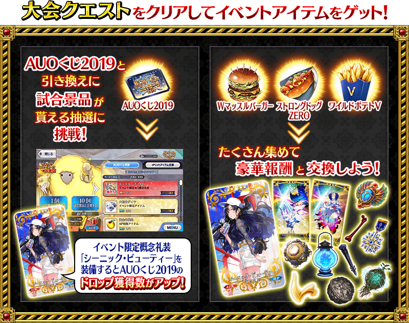 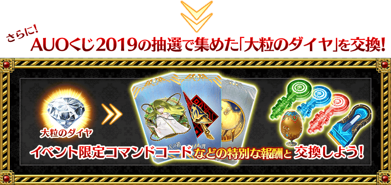 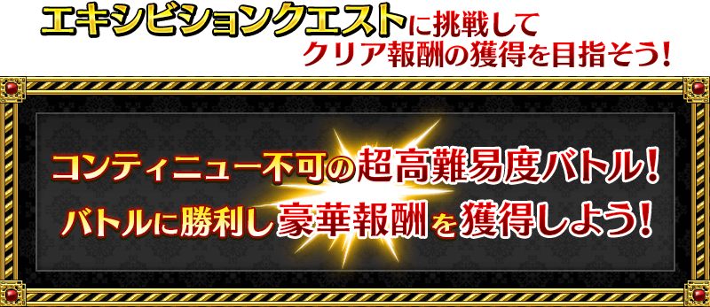

活動期間中，會出現與複數從者對戰的大會關卡。
大會關卡有5階段的難易度，各自對戰的從者和報酬等有所變化。
另外，透過行程表的進行，關卡的種類會從「正賽」變化，因此關卡內容也會變化。
請注意每個關卡有各自的舉辦期間，超過後就算是活動舉辦中也無法挑戰。
◆大會關卡舉辦期間◆
| 關卡的種類 | 舉辦期間 |
|---|---|
| 正賽 | 2019年9月18日(三) |
| S正賽 | 2019年9月22日(日) 17:00～9月27日(五) 17:59 |
| 決勝 | 2019年9月27日(五) 17:00～10月2日(三) 11:59 |
※9月27日(五) 19:00更新
【9月22日(日) 17:00更新】

| 關卡 | 推薦Lv. | 消費AP |
|---|---|---|
| ストリート級 NY楽しみ隊 | 25 | 30 |
| クラブ級 No.1は誰だ | 40 | 40 |
| ジム級 振り回される豹神 | 60 | 40 |
| アリーナ級 シャイニング･ランサー | 80 | 40 |
| ガーデン級 摩天楼キャロル | 90 | 40 |
【9月22日(日) 19:00追記】

| 關卡 | 推薦Lv. | 消費AP |
|---|---|---|
| ストリート級 超地獄減量レオ＆エレちゃん | 25 | 30 |
| クラブ級 復活のアルゴノーツ･前 | 40 | 40 |
| ジム級 たのしい爆発無双 | 60 | 40 |
| アリーナ級 復活のアルゴノーツ･後 | 80 | 40 |
| ガーデン級 NY観光の御一行 | 90 | 40 |
【9月27日(五) 17:00追記】
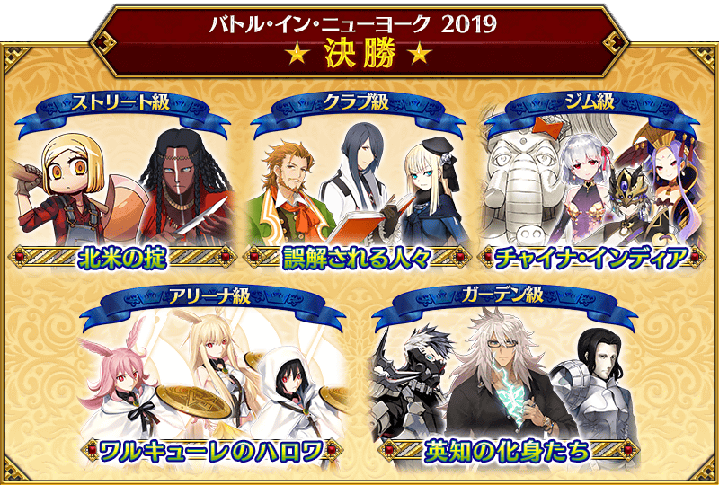
| クエスト | 推奨Lv. | 消費AP |
|---|---|---|
| ストリート級 北米の掟 | 25 | 30 |
| クラブ級 誤解される人々 | 40 | 40 |
| ジム級 チャイナ･インディア | 60 | 40 |
| アリーナ級 ワルキューレのハロワ | 80 | 40 |
| ガーデン級 英知の化身たち | 90 | 40 |
以附加無法接關限制挑戰的超高難易度關卡會有使用特殊技能等與平常不同攻擊方式的敵人。
通過關卡的話可得到呼符等的豪華報酬。
另外，在展演關卡有著隊伍的編成限制。
進行隊伍編成時，存在與隊伍成員同一位支援從者的情況無法出撃。
※同名的Servant若是稀有度或職階相異、在名稱附有〔Alter〕的情況則能夠編成。 ※活動期間中，關卡將逐日開放。 ※展演關卡就算在通過後也不會消失，能無數次挑戰。 ※關卡通過報酬、戰利品、御主EXP、魔術禮裝EXP、絆點數只可在初次通過時獲得。
【9月27日(三) 17:00更新】
| 關卡 | 舉辦期間 |
|---|---|
| 【超高難易度】本戦ファイナルマッチ | 2019年9月21日(六) 17:00～ 10月2日(三) 11:59 |
| 【超高難易度】奥様が魔女(呪) | 2019年9月22日(日) 17:00～ 10月2日(三) 11:59 |
| 【超高難易度】麗しきゴルゴン三姉妹 | 2019年9月23日(一) 17:00～ 10月2日(三) 11:59 |
| 【超高難易度】道化師を捕まえろ！ | 2019年9月24日(二) 17:00～ 10月2日(三) 11:59 |
| 【超高難易度】真紅の勇者伝説 HDリマスター | 2019年9月25日(三) 17:00～ 10月2日(三) 11:59 |
| 【超高難易度】翠の彗星 | 2019年9月26日(四) 17:00～ 10月2日(三) 11:59 |
| 【超高難易度】フィナーレ 永遠の都 | 2019年9月27日(五) 17:00～ 10月2日(三) 11:59 |
在2018年舉辦的期間限定活動「Battle in New York 2018」展演關卡再登場！
由於搶先開放期間限定活動「Battle in New York 2019」展演關卡，試著以豪華報酬為目標挑戰吧
另外，在展演關卡有著隊伍的編成限制。
進行隊伍編成時，存在與隊伍成員同一位支援從者的情況無法出撃。
※同名的Servant若是稀有度或職階相異、在名稱附有〔Alter〕的情況則能夠編成。
※活動期間中，關卡將逐日開放。
※展演關卡就算在通過後也不會消失，能無數次挑戰。
※關卡通過報酬、戰利品、御主EXP、魔術禮裝EXP、絆點數只可在初次通過時獲得。
※展演關卡無法接關。
※在期間限定活動「Battle in New York 2018」的活動限定概念禮裝「★5(SSR)リターン・マッチ」「★5(SSR)C・K・T」不會有自身的攻擊威力提升及活動道具的掉落獲得數提升的效果。 ※在期間限定概念禮裝「★5(SSR)Gilgamesh in NY」「★4(SR)摩天楼に輝く」「★3(R)ショウ・タイム」不會有活動道具的掉落獲得數提升的效果。
| 關卡 | 舉辦期間 |
|---|---|
| 【超高難易度】復刻:おむすびチェーン店・一號 | 2019年9月18日(三) 10月2日(三) 11:59 |
| 【超高難易度】復刻:フレイム・ゲート | |
| 【超高難易度】復刻:摩天楼の怪人 | 2019年9月19日(四) 17:00～ 10月2日(三) 11:59 |
| 【超高難易度】復刻:おいでよジャガーの国 | |
| 【超高難易度】復刻:ドルセント・リースショップ | 2019年9月20日(五) 17:00～ 10月2日(三) 11:59 |
| 【超高難易度】復刻:スイーツユニヴァース | |
| 【超高難易度】復刻:フィナーレ「金色のメトロポリス」 | 2019年9月21日(六) 17:00～ 10月2日(三) 11:59 |
也舉辦「Battle in New York 2018」的復刻主線關卡！
為了錯過在2018年舉辦的期間限定活動「Battle in New York 2018」內容的玩家，在期間限定活動「Battle in New York 2019」的舉辦期間中追加復刻主線關卡。
※在上次舉辦時獲得過「聖杯」的情況，復刻主線關卡中會以「傳承結晶」代替「聖杯」做為通過報酬。

於活動關卡收集「AUO抽獎券2019」，在烏魯克・紐約出差店交換競賽獎品吧！
競賽獎品的交換是以抽選方式進行。
在各競賽獎品的陣容會放入1個大獎道具。
抽到大獎道具後，點擊「競賽獎品重置」的話，會補充新的大獎道具，切換到下個陣容。
放入大獎道具的陣容有10次份！
獲得大獎道具，清空注目獎品後按下「競賽獎品重置」，補充大獎道具吧！
※第11次之後不會補充大獎道具及「黃金果實」「白銀果實」。 ※競賽獎品中的活動専用道具「大顆鑽石」，收集的話可交換活動限定指令紋章等豪華道具。 ※交換期間結束後「AUO抽獎券2019」會消失。
◆交換期間◆
2019年9月18日(三) 17:0018:00～10月9日(三) 11:59
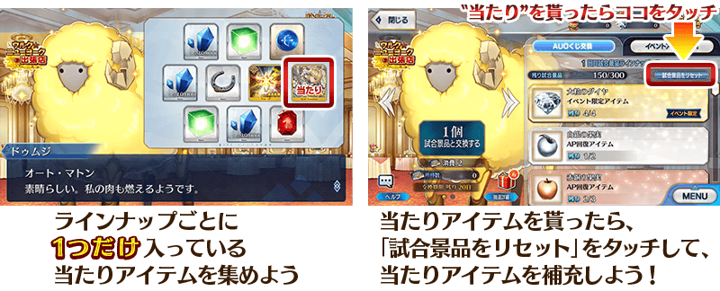
◆競賽獎品陣容◆
【大獎道具】
| 陣容次數 | 大獎道具 | ||
|---|---|---|---|
| 第1～5次 | 活動限定概念禮裝★5(SSR)「ジュエル・ブライド」 | ||
| 第6次 |

|
傳承結晶 | |
| 第7次 |

|
英靈結晶・流星之芙芙ALL★4(HP) | |
| 第8次 |

|
英靈結晶・日輪之芙芙ALL★4(ATK) | |
| 第9次 |
|
英靈結晶・流星之芙芙ALL★4(HP) | |
| 第10次 |
|
英靈結晶・日輪之芙芙ALL★4(ATK) | |
| 第11次以後 | 無(入手全道具後才能重置競賽獎品) | ||
【競賽獎品】
| 種類 | 競賽獎品 | ||
|---|---|---|---|
| 活動道具 |

|
大顆鑽石 | |
| 技能強化＆靈基再臨素材 |
蛇之寶玉 隕蹄鐵 英雄之證 愚者之鎖 |
||
| 技能強化素材 |
剣之秘石 弓之秘石 槍之秘石 騎之秘石 術之秘石 殺之秘石 狂之秘石 剣之魔石 弓之魔石 槍之魔石 騎之魔石 術之魔石 殺之魔石 狂之魔石 剣之輝石 弓之輝石 槍之輝石 騎之輝石 術之輝石 殺之輝石 狂之輝石 |
||
| 其他道具 |
睿智的猛火 ALL★4(SR) 睿智的大火 ALL★3(R) 黃金果實 白銀果實 赤銅果實 魔力稜鏡 QP 友情點數 |
||

超值攻略方法・其1
裝備活動限定概念禮裝讓自身的攻擊威力提升和活動道具的掉落獲得數提升！
裝備可在烏魯克・紐約出差店入手的活動限定概念禮裝「ジュエル・ブライド」的話，在期間限定活動「Battle in New York 2019」的活動關卡中會提升自身的攻擊威力提升。
另外，裝備可在活動道具交換的活動限定概念禮裝「シーニック・ビューティー」的話，在期間限定活動「Battle in New York 2019」的活動關卡中會提升活動道具「AUO抽獎券2019」的掉落獲得數。
※請注意各關卡的道具掉落率並非100％。
超值攻略方法・其2
裝備期間限定概念禮裝讓活動道具的掉落獲得數提升！
裝備在聖晶石召喚Pick Up的期間限定概念禮裝「ラウンド・アンド・ラウンド」「フライ・オフ」「フロム・ウルク」的話，會提升活動道具「W肌肉漢堡」「強健熱狗ZERO」「狂野薯條V」各自的掉落獲得數。
※請注意各關卡的道具掉落率並非100％。
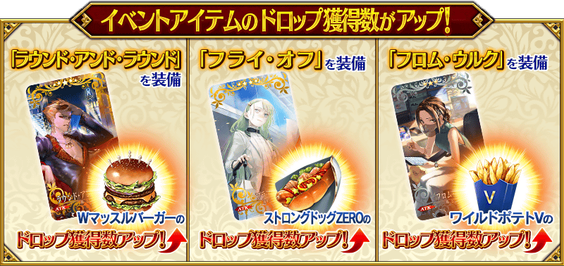
|
★★★★★SSR |
| 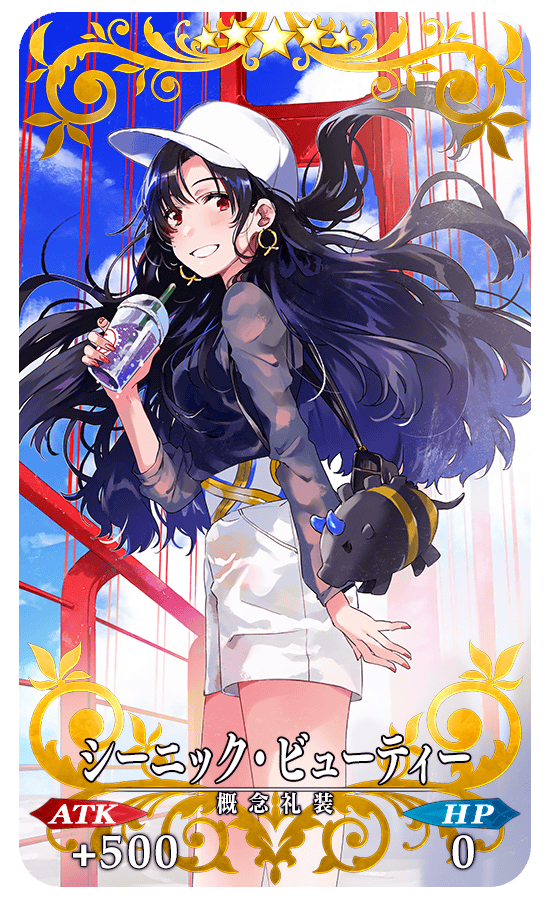 |
★★★★★SSR |

|
【活動限定】 |
| 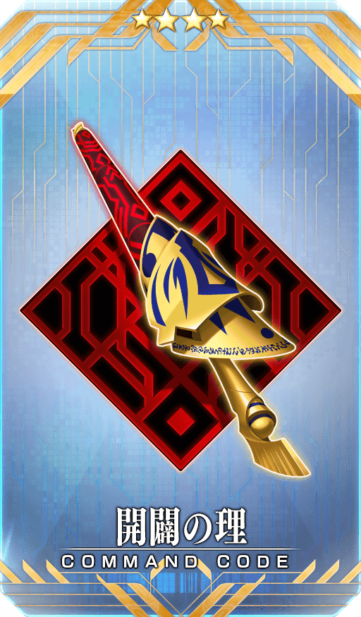 |
★★★★SR |
|
★★★R |
【9月18日(三) 19:00追記】
| 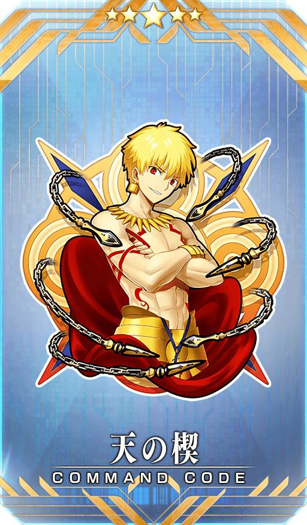 |
【活動限定】 |
| 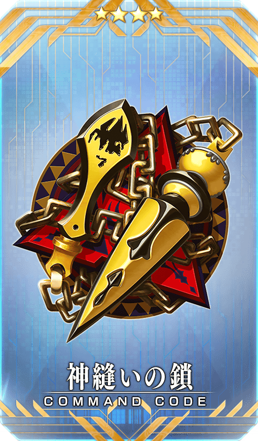 |
★★★★SR |
|
★★★R |

活動道具可自點擊管理室(ターミナル)畫面右上「活動報酬」鍵所顯示的「活動道具交換」畫面，交換以下的道具。
※關於英靈結晶・流星之芙芙ALL★4(HP)、英靈結晶・日輪之芙芙ALL★4(ATK)，在通過所有本活動的主線關卡才能交換。
※活動道具交換期間結束後「大顆鑽石」「W肌肉漢堡」「強健熱狗ZERO」「狂野薯條V」會消失。
◆交換期間◆
2019年9月18日(三) 17:0018:00～10月9日(三) 11:59
◆能用大顆鑽石交換的道具◆
|
【活動報酬指令紋章】 【技能強化＆靈基再臨素材】 【其他道具】 |
◆能用W肌肉漢堡交換的道具◆
|
【活動限定概念禮裝】 【技能強化＆靈基再臨素材】 【靈基再臨素材】 【其他道具】 |
◆能用強健熱狗ZERO交換的道具◆
|
【活動限定概念禮裝】 【技能強化＆靈基再臨素材】 【靈基再臨素材】 【其他道具】 |
◆能用狂野薯條V交換的道具◆
| 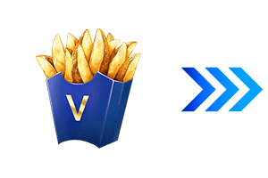 |
【活動限定概念禮裝】 【技能強化＆靈基再臨素材】 【其他道具】 |

【9月18日(三) 18:00追記】
翻新「★5(SSR)吉爾伽美什(Archer)」的戰鬥動作及寶具演出！
在「Fate/Grand Order」官方網站內的公告中，以影片公開寶具演出，敬請確認。
◆翻新實施時間◆
2019年9月18日(三) 17:0018:00～

在2019年9月18日(三)的遊戲更新後反映的更新內容之中，介紹代表性的內容。
◆追加時間◆
2019年9月18日(三) 17:0018:00～
新顯示AP的完全回復前時間
在管理室(ターミナル)變得可確認AP的全回復時間。
AP回復1的時間與全回復的時間會以一定間隔交互顯示。
※9月18日(三) 18:00一部份名稱修正
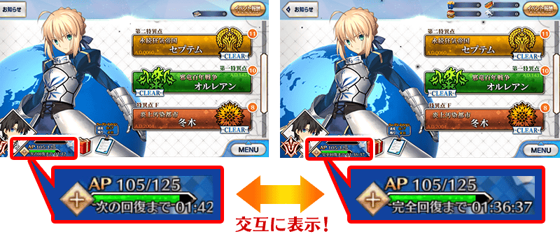
※9月18日(三) 18:00圖片修正改善Critical星星增加・減少時的演出
改善以Quick Chain和獲得・減少Critical星星技能，對Critical星星發生增加和減少時的演出。
因此更容易掌握Critical星星的增減。
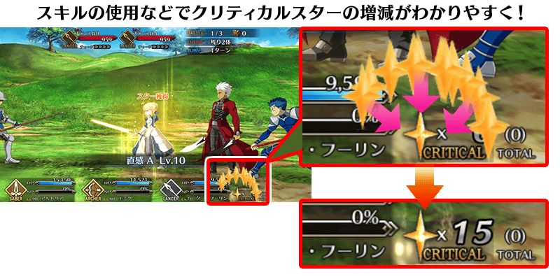
其他還有，期間限定「Battle in New York 2019Pick Up召喚」同時舉辦！
關於詳情，請自下述橫幅確認。
■「Battle in New York 2019Pick Up召喚」詳細情報